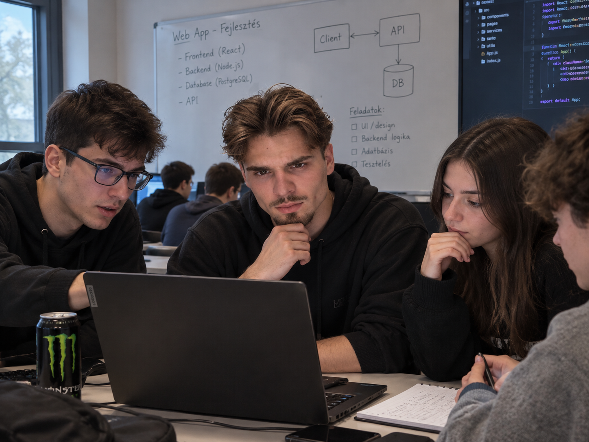
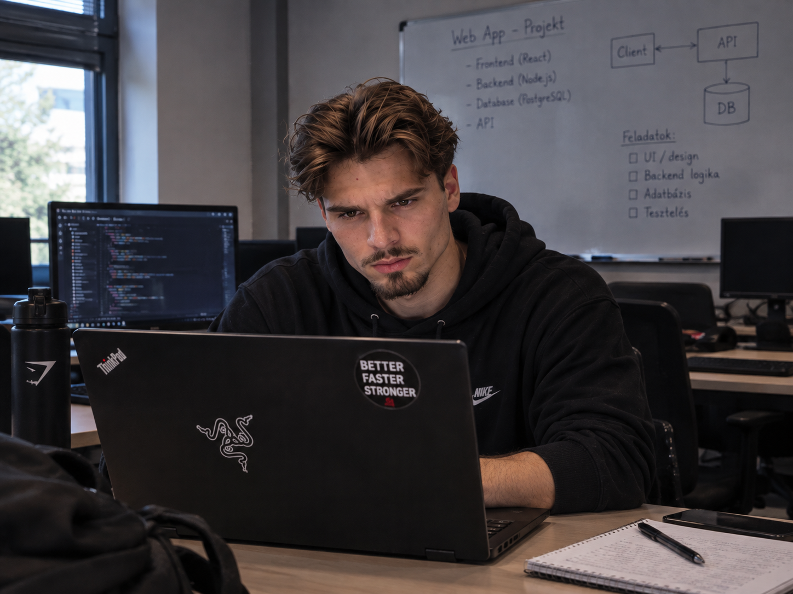
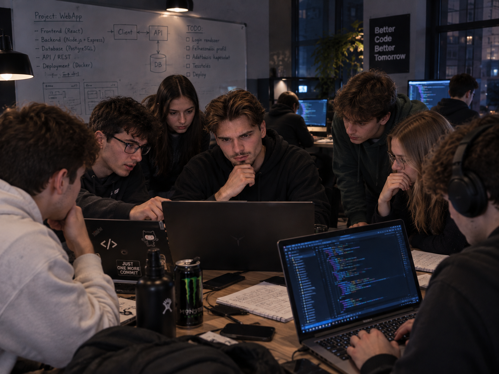

Bemutatkozás
Sziasztok!
A nevem Tóth Tamás, informatika iránt érdeklődő diák vagyok. Már több éve foglalkozom számítógépekkel, programokkal és weboldalak készítésével. Különösen érdekel a webfejlesztés, ezért szívesen dolgozom HTML, CSS és JavaScript alapú projekteken.
Szeretek új technológiákat megismerni, problémákat megoldani és kreatív ötleteket megvalósítani digitális formában. Fontosnak tartom a folyamatos tanulást, mivel az informatika egy gyorsan fejlődő terület, ahol mindig van lehetőség új ismeretek megszerzésére.
Célom, hogy a jövőben is az informatika világában dolgozzak, és olyan projekteken vegyek részt, amelyek hasznosak és értékesek mások számára is.
Készségek
Projektek
TaskTracker Mini
Egy egyszerű feladatkezelő alkalmazás, ahol a felhasználó létrehozhat, módosíthat és törölhet teendőket. Junior fókusz: alap CRUD műveletek, lista kezelés, fájl‑ vagy egyszerű adatbázis‑mentés.

WeatherLite
Könnyű időjárás‑lekérdező app, ami egy nyilvános API‑ból (pl. OpenWeather) húzza az adatokat, és megjeleníti a hőmérsékletet, páratartalmat, ikonokat. Junior fókusz: API hívások, JSON feldolgozás, alap UI.

BudgetBuddy
Egyszerű költségkövető alkalmazás, ahol a felhasználó rögzítheti bevételeit és kiadásait, majd havi összesítést kap. Junior fókusz: adatszerkezetek, számítások egyszerű riportok. fókusz: API hívások, JSON.
